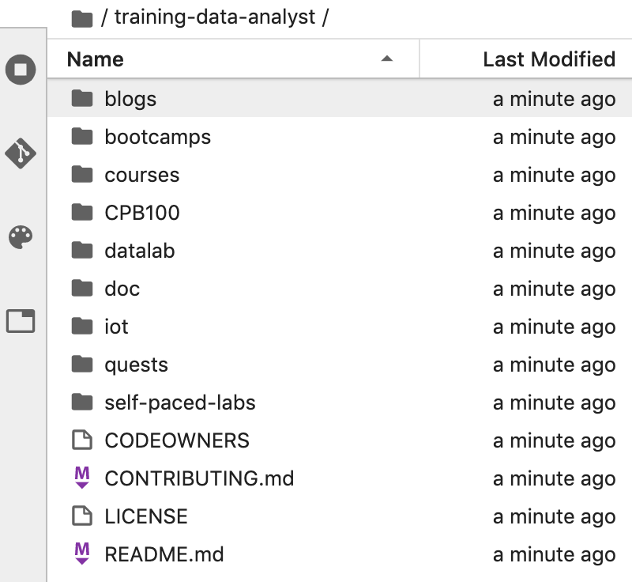

Pour cloner le notebook training-data-analyst dans votre instance JupyterLab, procédez comme suit :
Étape 1
Dans JupyterLab, cliquez sur l'icône Terminal pour ouvrir un nouveau terminal.
Étape 2
À l'invite, saisissez la commande suivante, puis appuyez sur Entrée.
git clone https://github.com/GoogleCloudPlatform/training-data-analyst
Étape 3
Vérifiez que vous avez bien cloné le dépôt : double-cliquez sur le répertoire training-data-analyst et assurez-vous de pouvoir en lire le contenu. Vous y trouverez les fichiers de tous les ateliers de ce cours en rapport avec le notebook Jupyter.
